平成最後、川井峠のしだれ桜 < 川井峠 / 徳島県美馬市木屋平 >
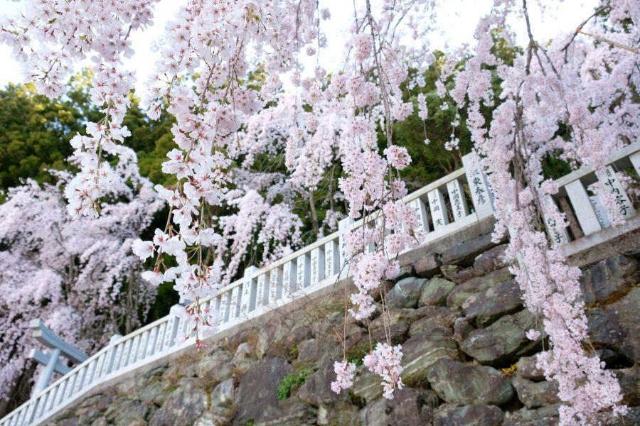
市街地の桜のシーズンが終わると、次は山の桜があります。
南北朝動乱の時代を今に伝える美馬市木屋平(みましこやだいら)は、居住地の平均標高が450mの高所に位置する山岳地域。村の東側の入口となる川井峠(かわいとうげ)では、平地より遅れて4月上旬に桜が見頃を迎えます。
遠くから見てもそれと分かる、ピンクの斜面
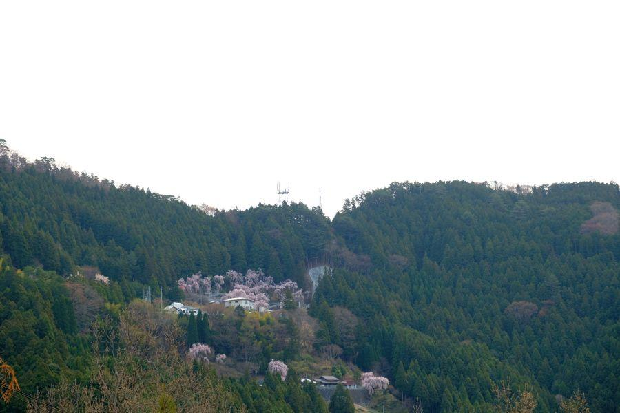
木屋平の中心・川井集落から西へ、坂道・狭路をグイグイ登って行きます。
やがて目に入るのがこの景色。桜が咲く時期は この通り、遠くからでもしだれ桜の群生が目に入ります。
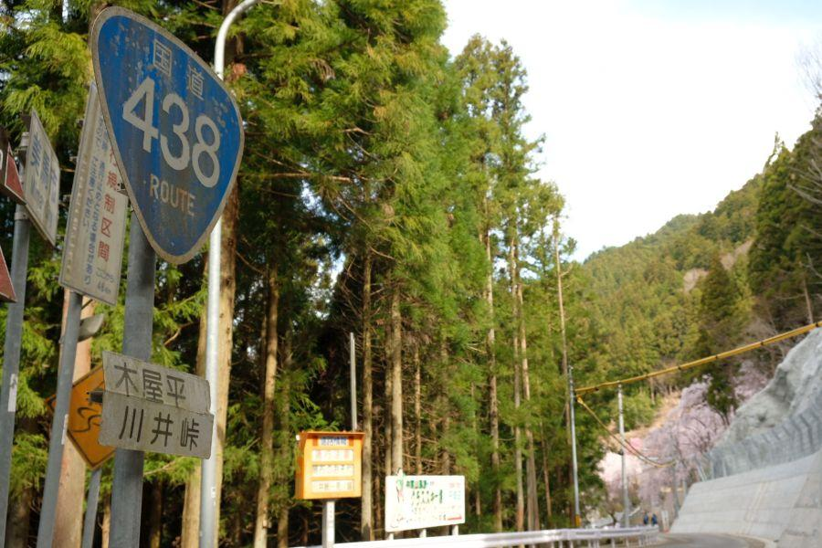
現在は国道438号となっている川井峠。峠部分は川井トンネルで通過します。
ここは国道438・439号の重複区間ですが、狭路・急傾斜が連続することから「酷道(こくどう)」とも表されます。一部にはそのような道を敢えて好む愛好者がおり、国道439号は その番号から「ヨサク」と呼ばれ、酷道ファンの間では必ず話に上がる 酷道の中の酷道です。
個人が植えた枝垂桜
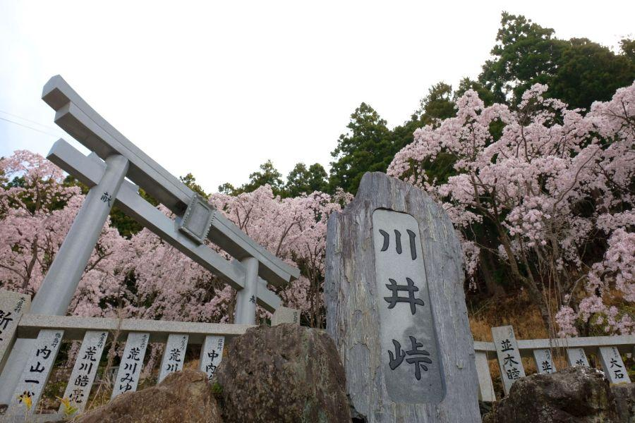
川井峠(かわいとうげ / 徳島県美馬市木屋平)
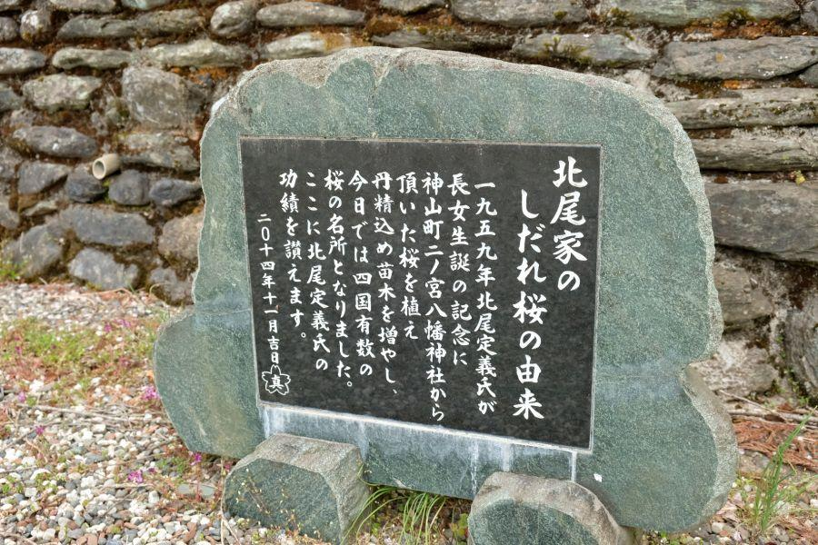
約20本あると言われる枝垂桜は、個人が植えたもの。山奥に息づいた桜と所有者さんです。
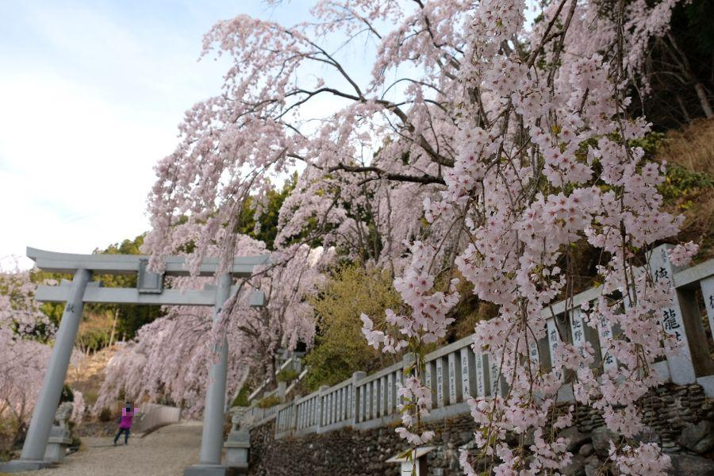
しだれ桜が植えられた場所は神社境内でもあります。
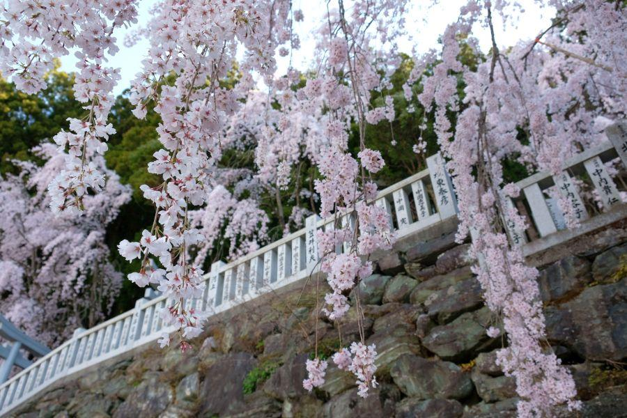
枝垂桜は、伸びた枝に花束のように花が付くので、かわいらしさを感じることができる点が、魅力の一つじゃないかなあと思います。
四国第二の高峰・剣山を臨む峠
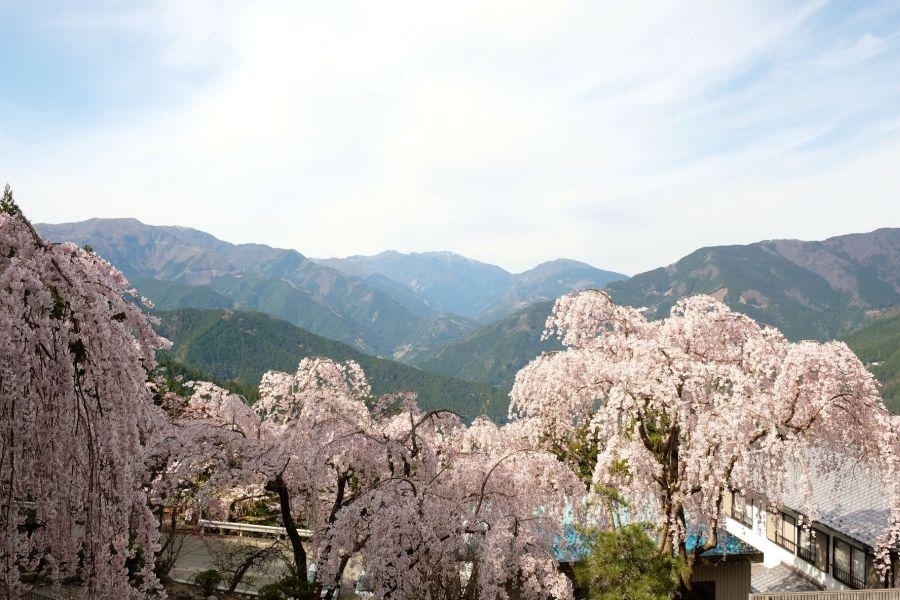
神社の境内に上がると、しだれ桜と国道438号を見下ろす形になり、天候が良ければ 正面に剣山(つるぎさん)を臨むことができます。
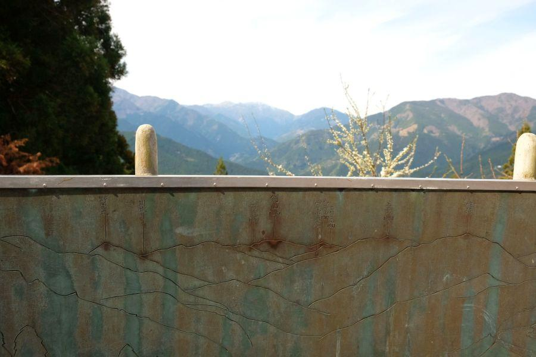
目の錯覚で周囲の山々と 高さはあまり変わらないように見えますが、剣山だけ白く冠雪。標高1,955mは 四国第二の高峰。高さも風格も違います。
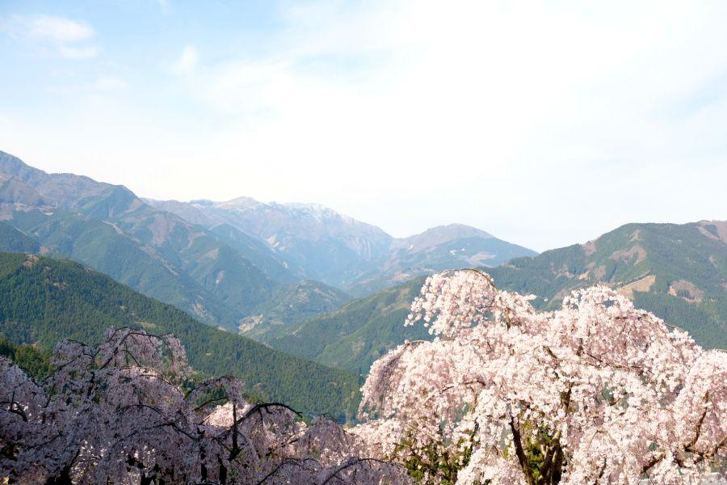
ヨサク酷道(国道438・439号)は、剣山の白い峰の右肩、一番窪んだ部分「見ノ越」を通ります。
しだれ桜がある川井峠からは 一度標高を下げて、川井集落(木屋平中心地)へ。再び上がること標高1,410m。見ノ越は川井峠の標高700mの ほぼ倍の高さがあります。
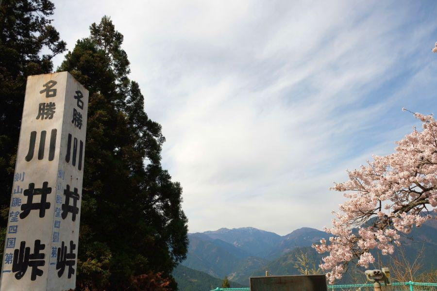
「剣山眺望四国第一」の謳い文句に詐称無し。今の時期は更に 桜が眺望に花を添えます。
平地で桜を楽しんで、後日 徳島県の山奥へ行き、しだれ桜とお山を眺めて。個人的にここへは毎年桜の時期に訪れていますが、何度来てもどれだけ居ても飽きない 素晴らしい光景が、川井峠にはあります。
川井峠のしだれ桜
< 自家用車 >
高松駅から 約2時間、81km
高松空港から 約1時間40分、69km
徳島駅から 約1時間10分、45km
徳島阿波おどり空港から 約1時間30分、72km
※ 主な地点からの最速・最短距離
※ 高松・徳島 どちらからも道中に狭路が存在します。運転にはお気をつけください
関連記事
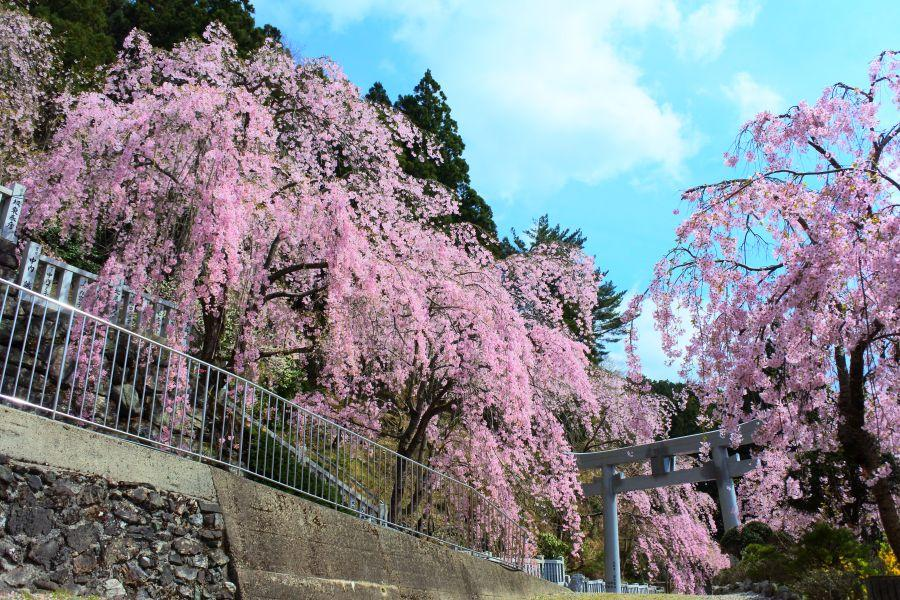
2018,4/12 絶景しだれ桜と、山中に秘められた歴史ロマン < 川井峠 / 徳島県美馬市木屋平 >
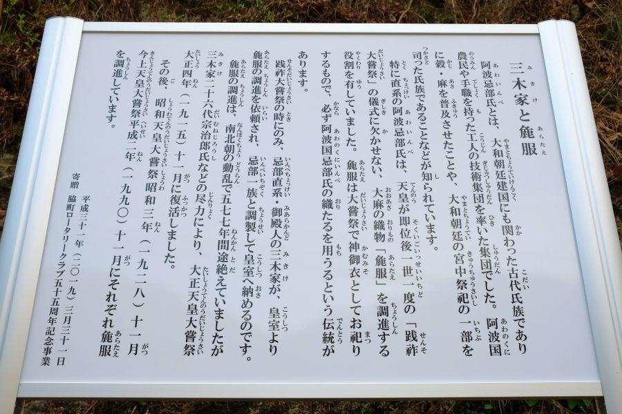
2019,4/7 阿波山中。皇室に麻衣を調進してきた一族の話・前編 < 三木家住宅 / 徳島県美馬市木屋平 >
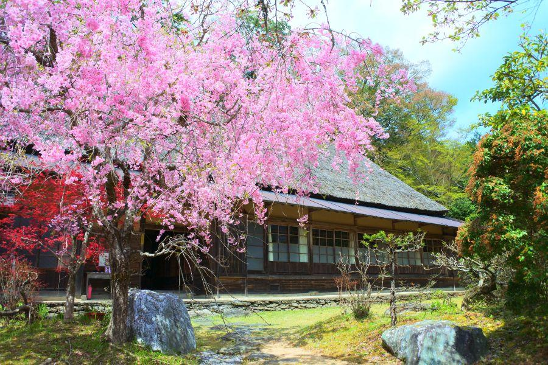